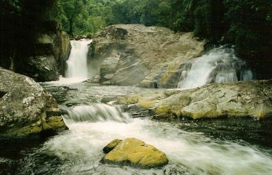
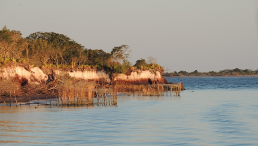
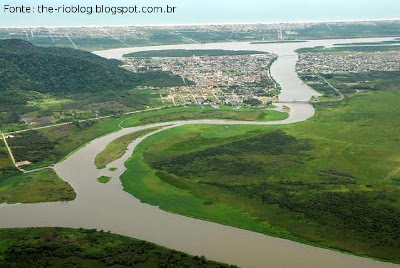
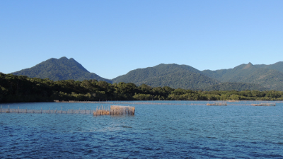
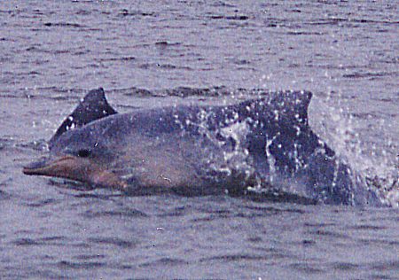
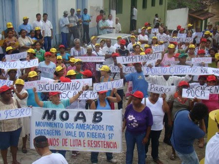

Considerada a mais importante reserva de água doce desses dois Estados é um dos mais conservados bancos genéticos de todo o Brasil. Suas vilas e cidades históricas, com marcos do início da colonização, guardam aspectos de grande interesse cultural. Tendo como fundo as elevações da Serra do Mar, em direção ao litoral, o vale se estende sob a forma de uma enorme planície sedimentar marcada por morros arredondados, restingas, manguezais, canais e mares interiores. Espalhados pelos seus diferentes ecossistemas encontra-se uma tal riqueza de espécies que levou a UNESCO (Organização das Nações Unidas para Educação, Ciência e Cultura) a declarar a região como parte da “Reserva da Biosfera da Mata Atlântica” e também como “Patrimônio Natural e Cultural da Humanidade” (MAGALHÃES,
2003).

O Sistema Estuarino-lagunar de Cananéia-Iguape situa-se no extremo sul da costa paulista (25ºS - 48ºW), sendo limitado na porção norte pelo município de Iguape, ao leste pela Ilha Comprida, a oeste pela Serra do Mar e na parte sul pelas ilhas de Cananéia e do Cardoso. Apresenta duas ligações principais com o oceano: na parte norte, através de um único canal (Mar Pequeno - Barra de Icapara) e na parte sul dividindo-se em dois ramos (Mar de Cananéia e Mar de Cubatão - Baía de Trapandé) os quais circundam a Ilha de Cananéia e desembocam no mar pelas Barras de Cananéia e de Ararapira. A região de Cananéia compreende um canal principal (Mar de Cananéia) com formação de um rio de largura média, não superior a 1 km, e comprimento aproximado de 75 km, que segue paralelo à Ilha Comprida, com o local de
maior profundidade situado próximo à barra de Cananéia, com cerca de 6
a 7 m (BESNARD, 1950; MIYAO et al., 1985 apud MENDONÇA, 2007). No extremo sul do município, localiza-se a Barra do Ararapira, sendo um canal estreito de largura não ultrapassando aos 800 m.
A região apresenta valores pluviométricos máximos de janeiro a março com média mensal de 266,9mm e mínimos em julho e agosto, de média mensal 95,3mm, sendo 2.300 mm a precipitação média anual (MISHIMA et al., 1985, SILVA & HERZ, 1987 apud MENDONÇA, 2007). A circulação dentro do sistema é dirigida principalmente pela ação das ondas de maré, que entram pelas Barras de Cananéia e Icapara, e pela contribuição da água doce de diversos rios, sofrendo ainda, a influência do vento. De modo geral, a salinidade aumenta com a profundidade, apresentando, em determinadas fases da maré uma acentuada haloclina à meia profundidade, que desaparece subseqüentemente, tornando a coluna d’água uniforme (MIYAO et al., 1989; MIRANDA et al., 1995 apud MENDONÇA, 2007).
Desde o século passado, este sistema vem sendo influenciado pela construção de um canal, denominado Valo Grande, no município de Iguape, na porção norte do sistema estuarino-lagunar. Este foi construído com o objetivo de facilitar a navegação na parte final do Rio Ribeira de Iguape e apresentava 4,40 m de largura, logo após a sua construção (BESNARD, 1950 apud MENDONÇA, 2007).
Atualmente, devido à erosão nas bordas, o canal tem mais de 300 m de largura, fazendo com que a maior parte da vazão do rio Ribeira escoe por ele, acarretando grande efeito sobre o ecossistema como um todo, devido à diminuição da salinidade. Em 1978 o Governo do Estado de São Paulo decidiu fechar o Valo construindo uma barragem, fazendo com que, novamente, houvesse alterações no ecossistema (MISHIMA et al., 1985 apud MENDONÇA, 2007). Com o rompimento da barragem, ocorrido em 1995, houve mudanças no comportamento hidrodinâmico do sistema com a intensificação das correntes e aumento da estratificação vertical da salinidade, com aporte fluvial mais intenso.

O Complexo estuarino-lagunar de Cananéia, Iguape e Paranaguá é uma das mais importantes áreas úmidas da costa brasileira em termos de biodiversidade e produtividade natural. Este é reconhecido nacional e internacionalmente como terceiro ecossistema mais produtivo do Atlântico Sul, devido às suas características ambientais estarem muito bem preservadas, sendo considerado como Reserva da Biosfera da Mata Atlântica em 1993 (UNESCO, 2005 apud MENDONÇA, 2007), bem como, Sítio do Patrimônio Mundial Natural, do conhecimento científico e da preservação de valores humanos e do saber tradicional com vistas a modelos de desenvolvimento sustentado (UNESCO, 1999 apud MENDONÇA, 2007).

O litoral sul de São Paulo apresenta diversas áreas institucionalmente protegidas, pela sua relevância ambiental e importância como berçário de espécies marinhas e estuarinas e como remanescente de Mata Atlântica, dezenas de ilhas, a ocorrência de manguezais em bom estado de conservação, afluência de dezenas de pequenos rios não poluídos e uma ocupação humana relativamente escassa garantem os atributos naturais dessa região (SMA-SP, 1990 apud MENDONÇA, 2007).
Em suas águas, vivem diversas espécies marinhas destacando-se o boto-cinza, um pequeno mamífero marinho que interage constamentemente com os pescadores caiçaras de cerco-fixo.

As unidades de conservação existentes na região variam em termos de grau de restrição de uso, bem como, na competência para a gestão, havendo unidades estaduais e federais (MENDONÇA, 2007).
Vale destacar, a crescente ameaça que toda a região do Vale do Ribeira sofre com os atuais projetos de mineração e, principalmente, de construção de barragens para geração de energia com a finalidade de atender as demandas e interesses comerciais de mega-empresas, como por exemplo, o projeto de construção da U.H.E. Tijuco Alto pela Companhia Brasileira de Alumínio (CBA), do Grupo Votorantim.
Importante dizer, que há mais de 25 anos as comunidades quilombolas, caiçaras, caboclas e indígenas da região lutam contra a implementação desse projeto por considerarem que o mesmo afetará o seu modo de vida tradicional.

><> ><> ><>
REFERÊNCIAS BIBLIOGRÁFICAS:
MAGALHÃES. N. W. 2003. Descubra o Lagamar. Pólo de Ecoturismo Vale do Ribeira – Lagamar. 2a ed. Rev. Ampl. Terragraph. São Paulo.
MENDONÇA, J. T. Gestão dos recursos pesqueiros do complexo estuarino-
lagunar de Cananéia-Iguape-Ilha Comprida, litoral sul de São Paulo, Brasil. Tese de Doutorado. Universidade Federal de São Carlos. 2007.


{kind=link}
{kind=link}
{kind=link}
{kind=link}
{kind=link}